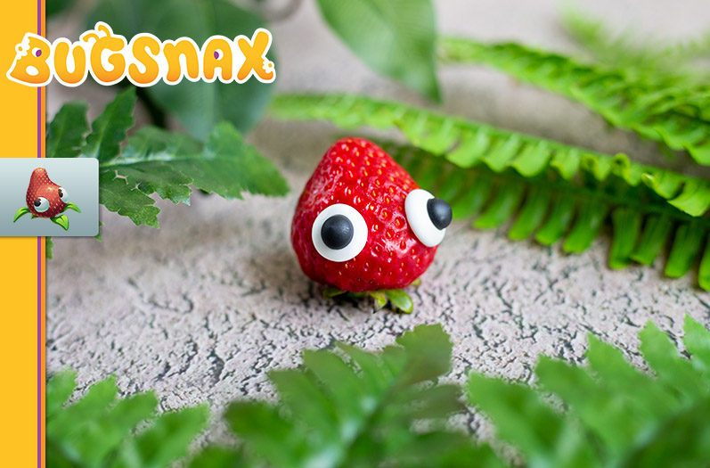

BUGSNAX:Strabby

Return to top
Return
ingredients
- 2 cups confectioners’ sugar
- 2 tsp meringue powder
- ¼ tsp salt
- ¼ cup cold water
- 1 tbsp corn syrup
- ½ tsp vanilla extract
- black food dye
Steps
- Place the confectioners’ sugar, meringue powder, and salt in a large bowl.
Add the water, corn syrup, and vanilla extract. Whip together, about 5 to 8 minutes,
until it reaches the consistency pictured above.
- Setup two baking trays with parchment paper. Prepare a piping bag with a round tip
(I used size 6). Transfer ¾ths of the meringue mixture, it will be sticky and will cling
to the sides of the bag. Carefully push the mixture towards the piping tip and make small
dots for the eye base. Make several sizes to fit different Bugsnax. Repeat until you are out
of the white meringue
- Add black food dye to the remaining meringue mixture and mix until it is blended in.
Prepare a piping bag with a round tip (I used size 3). Transfer the remaining meringue
mixture and push the mixture towards the piping tip. Carefully pipe a pupil on top of each
of the eyes. Repeat until you are out of the black meringue.
- Leave the eyes, uncovered out at room temperature for 12 to 24 hours until it hardens.
Once hard, transfer to an airtight container.